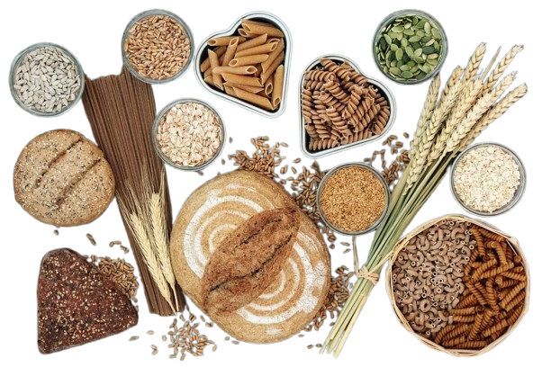

¿Qué son los alimentos integrales?
Los alimentos integrales son aquellos que se consumen en su estado
más natural, es decir, mínimamente procesados o sin procesar, conservando
la mayor parte de sus nutrientes originales como fibra, vitaminas y minerales.
Incluyen frutas, verduras, frutos secos, legumbres, y cereales que no han
sido refinados, a diferencia de los alimentos procesados que a menudo contienen
azúcares, sal, grasas o aditivos añadidos
¿Cuáles son los 5 mejores granos integrales?
- Mijo: Mijo hervido dentro de una olla. Pequeñas bolitas amarillas, suave y esponjoso al cocinarlo.
- Quinoa: La quinoa es una semilla más que un grano, aunque se consume como cereal. Rica en proteínas y con textura ligeramente crujiente cuando está cocida.
- Trigo sarraceno: Bol con granos de trigo sarraceno recién cocinados. Sin gluten, con sabor a nuez y buena textura para ensaladas o como guarnición.
- Amaranto: Semilla pequeña y nutritiva; queda esponjosa al cocinarla y se usa en cereales, barras o como acompañamiento.
- Avena: Granos de avena cocidos; versátil para gachas, batidos o en repostería, aporta fibra y energía sostenida.

Martina Ferrando - Instituto Vision Tecnologica